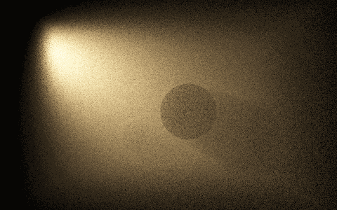
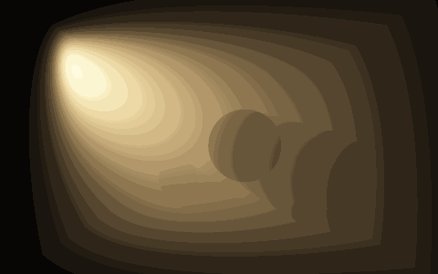
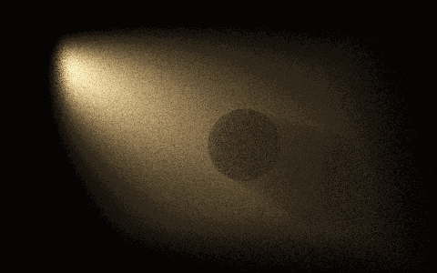
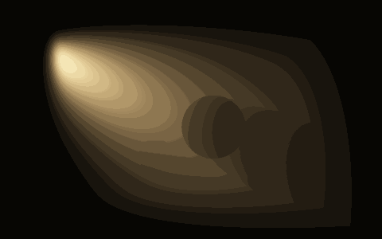
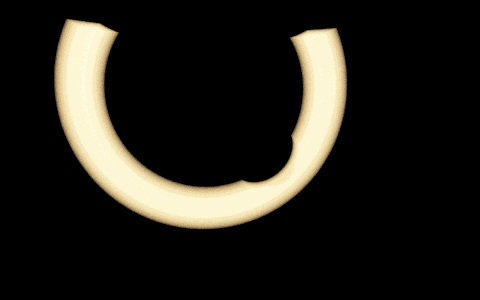

This additive experiment is available in View → Optics & primitive laboratory → Sphere connection render, or directly through Sphere-Connection.bat. It leaves the currently loaded scene and selected integrator unchanged.
The original support-intersection study solved the geometry and integrated a declared test function around the circle. This renderer takes the next step: it produces a radiance film for a three-dimensional scene with a point lamp, a bounded homogeneous scattering medium, a pinhole sensor and two opaque occluders. Its independent camera-ray reference targets exactly the same transport problem.
What remains after the two spheres intersect?
Let the lamp and sensor positions be and . Sample two distances and . A possible scattering point must satisfy
For regular intersections the remaining support is a circle. Sampling a uniform azimuth chooses a scattering point on it; the renderer then tests both segments for visibility and projects the result onto the actual sensor film. It does not draw the circle as a decorative line.
The two radii and azimuth form a three-coordinate change of variables for the scattering volume. The extra sphere is therefore useful without pretending that its surface alone supplies a valid sensor model. Sensor response still appears through the film projection and its pixel solid angle.
The actual measure
Write the circle radius as and the distance between its centers as . Signed-distance constraints have normals , , so coarea gives
Uniform azimuth contributes . Consequently,
This last ratio is evaluated directly. For these regular spheres the two vanishing factors have a known finite limiting ratio; numerically computing an enormous inverse Jacobian and then multiplying by a tiny circumference would needlessly lose stability. Exact tangencies and coincident spheres are not regular circle domains and are rejected. The implementation uses the existing finite-precision geometric predicate; it does not claim to resolve arbitrarily small circles below that predicate's tolerance.
Let denote the single-scattering source along the camera ray, including both visibility tests and both transmittances:
Here is radiant intensity. The phase function is normalized Henyey–Greenstein, and for albedo . Beer attenuation only counts the portions of each segment inside the medium box. The vacuum between the box and camera or lamp is not attenuated.
Pixel measures solid-angle-averaged radiance. Since , one sampled connection contributes
The film averages over every attempted radial pair, including disjoint, nested, off-screen and occluded attempts. Normalizing by visible connections instead would change the estimator. The radial proposals cover the distances from each endpoint to the entire bounded medium; their densities are included explicitly.
See one circle family without confusing it with blur
Isolate two radial gates restricts the source and sensor distances to separate finite intervals. Each box gate is normalized by its width. Their projected overlap therefore appears as a band. Shrinking both widths approaches the conditional circle-supported distribution; it does not become a finite pointwise image value everywhere.
There is no additional screen splat kernel in this renderer. Each connection deposits into its containing pixel, whose finite solid angle is the declared measurement filter. Image display interpolation merely enlarges the film. These two radial gates are an experiment in conditional path distances, not a claim that an ordinary time-of-flight sensor independently measures both distances.
Validation and performance scope
tests/test_sphere_connection_render.cpp runs a camera-ray midpoint quadrature with angular subpixel integration. That reference never constructs a circle, evaluates the coarea factor, or deposits point samples. Refinement comparisons measure its finite quadrature error.
The initial Release validation used 24 independent batches of 120,000 connections for the integrated-film comparison:
| Scene | Camera reference | Mean sphere connections | Standard error |
|---|---|---|---|
| Entire bounded medium | 0.0268109 | 0.0267544 | 0.00009256 |
| Two normalized radial gates | 0.00171743 | 0.00171861 | 0.000001882 |
For the whole-medium image, regional relative error dropped from 10.68% at 100,000 draws to 1.91% at 4 million. The gated image dropped from 1.90% to 0.51%. Regions aggregate 4×4 pixels, so these are not per-pixel noise claims. The gated reference refinement changed the integrated value by 0.00000908; that measured quadrature uncertainty is included in the acceptance threshold.
The harness also checks the medium boundary, independent camera and lamp visibility, zero-scattering cases, pixel solid-angle normalization, rejected supports and the stable coarea identity near regular tangency. It can export actual image pairs, linear radiance CSV and measured timings. Both images use the same display exposure and warm display tint; this palette is not a spectral colour calculation, and individual image maxima are never normalized separately.
Rendered presets
Here the recorded quantity labeled flux is the field-of-view integral . It is a useful normalization check, not detector power: aperture area and a complete sensor-throughput model are not included in that scalar report.
The published proof images are 480×300 pixels at a shared exposure of 10, with 24 million attempted sphere connections each. Medium bounds are (−2.4, −1.6, −1) to (2.4, 1.6, 4); the camera is (0, 0, −4), with a vertical field of view of 46°. Extinction is 0.24, albedo 0.9, and source radiant-intensity scale 65. Two opaque blockers have centers/radii (0.45, −0.15, 1.7)/0.64 and (−0.85, −0.85, 2.7)/0.4.
| Preset | Lamp and phase | Camera reference flux | Sphere flux | Connection sampling | Reference computation |
|---|---|---|---|---|---|
| Fog and shadow | Lamp (−3, 1.35, 1), aiming at (0, −0.15, 1.9); cosine exponent 9; HG g=0.25 | 0.02682977 | 0.02680876 | 3.54 s | 11.83 s |
| Forward-scattering beam | Same lamp; cosine exponent 18; HG g=0.55 | 0.00776793 | 0.00775965 | 3.56 s | 12.14 s |
| Isolated intersection circle | Isotropic lamp (−0.4, 0.7, 0.2); HG g=0; source radius 1.8, sensor radius 5.2, each gate width 0.28 | 0.04421168 | 0.04421254 | 4.80 s | 19.97 s |
The isolated circle is clipped by the medium box and opaque blockers. Its bright band is radiance arriving through the normalized pair of finite radial gates, not a line renderer. It is a different gated preset from the smaller validation fixture in the preceding table.
The reference uses 192 distance steps and 2×2 angular subpixels, or 384 distance steps for the isolated circle. These timings compare two deliberately different numerical estimators at their stated budgets, not equal-error renderers or a claim that sphere connections beat a production path tracer. Camera quadrature is unusually expensive here because it is an independent deterministic validation reference. The native UI uses a smaller progressive film and limits reference work to about 3 ms per frame.
The UI first displays a labeled coarse preview, then refines the independent reference in small chunks. The numerical comparison appears only after full reference completion. Exports identify still-unrefined pixels rather than silently presenting the preview as the finished reference.
This confirms a working restricted connection estimator, not universal superiority. Uniform radial sampling can waste many draws, and point deposition spreads the budget over the entire film. A camera estimator already solves an easy single-scattering scene efficiently. A useful next comparison would condition the radial proposals on a difficult path family while retaining all their densities and visibility terms.
The experiment does not yet handle area emitters, multiple scattering, specular paths, heterogeneous media, an arbitrary loaded scene or general sphere/plane/volume combinations. Those remain separate extensions rather than capabilities inferred from a working geometric picture.
Native image comparisons
The left-to-right reading order below is the sphere-connection film followed by its independent camera-ray reference. Both use the same exposure, tint and display transform. The 480 × 300 image size and 24 million attempted radial pairs are deliberately explicit: this is working transport evidence, not a claim that the point-deposition route already improves interactive efficiency.
Fog and shadow


Forward-scattering beam


Isolated intersection circle

Related transport reference
The physical single-scattering factors follow the usual volume transport formulation described in Physically Based Rendering, Volume Scattering Integrators and Transmittance. The two-sphere coordinate experiment and its restricted implementation are developed here; these references are not presented as sources for this exact estimator.